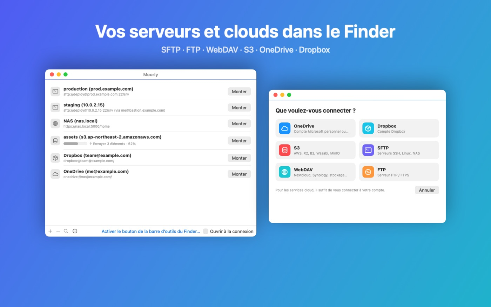
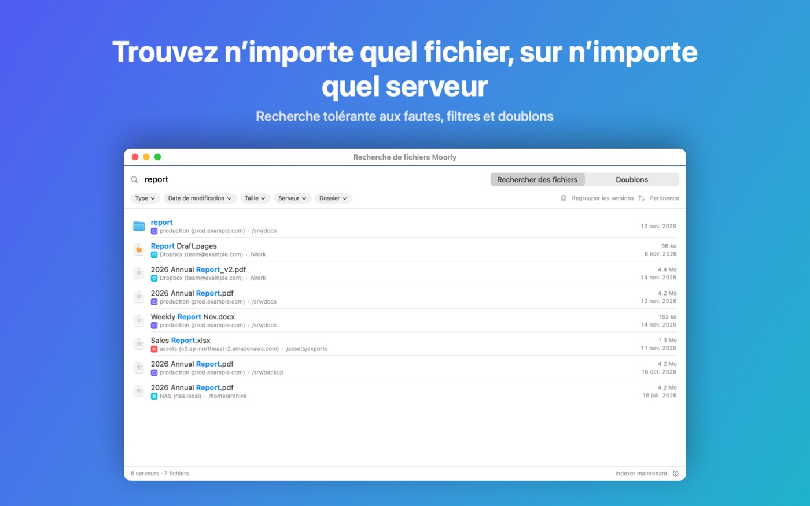
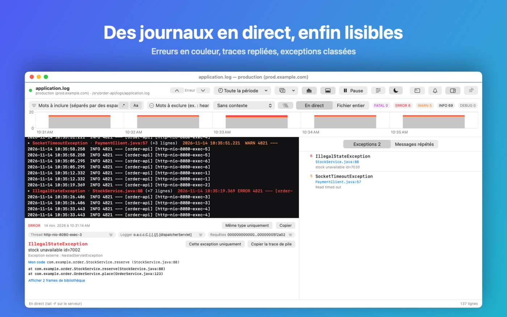

Vos serveurs et services cloud directement dans le Finder · macOS 14 ou ultérieur
Moorly place vos serveurs SFTP, FTP, WebDAV et S3, ainsi que OneDrive et Dropbox, dans la barre latérale du Finder pour que vous puissiez ouvrir et enregistrer des fichiers comme s’ils se trouvaient sur votre Mac.
Moorly fonctionne aussi avec des dossiers déjà présents sur votre Mac, comme iCloud Drive ou le dossier de l’app Google Drive.
Premiers pas

Cliquez sur l’icône Moorly dans la barre des menus, puis ouvrez Connexions.
Cliquez sur + (⌘N) et choisissez un service.
Serveurs (SFTP, FTP, WebDAV, S3) : saisissez l’adresse, le nom d’utilisateur et le mot de passe ou la clé, puis cliquez sur Tester la connexion et enregistrer. Services cloud (OneDrive, Dropbox) : cliquez sur Se connecter avec Microsoft (ou Dropbox)…. La page de connexion s’ouvre dans votre navigateur. Une fois connecté et l’accès autorisé, cliquez sur Ouvrir lorsque le navigateur propose d’ouvrir Moorly, vérifiez le nom, puis cliquez sur Enregistrer.
Cliquez sur Monter dans la liste. La connexion apparaît sous Emplacements dans la barre latérale du Finder.
Venir d’une autre app : dans Gérer les connexions, choisissez ⋯ › Importer depuis d’autres apps pour reprendre d’un coup votre liste de serveurs de FileZilla, Cyberduck ou Mountain Duck, Transmit ou ~/.ssh/config. Les serveurs SFTP sont vérifiés au premier montage.
Plusieurs Mac : activez Réglages › Synchronisation iCloud et votre liste de serveurs apparaît sur vos autres Mac connectés au même compte Apple. Pour envoyer aussi les mots de passe, activez Synchroniser aussi les mots de passe et connexions avec le trousseau iCloud. Chaque Mac monte séparément.
Les fichiers sont téléchargés lorsque vous les ouvrez et envoyés lorsque vous les enregistrez. Les mots de passe et les jetons de connexion sont stockés uniquement dans le trousseau macOS.
Conseils pour SFTP
Utilisez Importer depuis ~/.ssh/config… pour reprendre vos réglages d’hôte existants.
Si vous devez passer par un hôte de rebond, indiquez-le dans Avancé › Hôte de rebond.
Lorsque vous montez la racine du serveur (/), /proc et /sys sont masqués (ce sont des dossiers virtuels en constante évolution).
Panneau de la barre des menus
Cliquez sur l’icône Moorly dans la barre des menus pour ouvrir le panneau. (Un clic en maintenant la touche Contrôle ou ⌥ enfoncée ouvre un menu rapide : connexions, recherche de fichiers, transferts et synchronisation, journal en direct, réglages, aide et quitter.)
Serveurs : la pastille sur chaque icône indique l’état : vert pour monté, orange en cas de problème, gris pour non monté. Cliquez sur une ligne pour ouvrir le dernier dossier consulté. … propose Démonter, Actualiser, Analyser l’utilisation du disque, Ouvrir dans Terminal, et plus encore.
Dossiers : pour chaque serveur, ★ Favoris · 🔥 Fréquents · 🕘 Récents. Placez le pointeur sur un dossier et cliquez sur ☆ pour l’ajouter aux favoris ou l’en retirer.
Fréquents répertorie les dossiers que vous avez ouverts au moins deux fois au cours des 30 derniers jours, les plus ouverts en premier. Choisissez combien en afficher par serveur dans Réglages › Menu.
Les dossiers ouverts par Moorly conservent leur historique : le bouton ◀ (Précédent) du Finder et ⌘↑ vous ramènent au dossier parent.
Transferts : cliquez sur ⇅ en haut du panneau (ou Transferts… dans le menu contextuel) pour voir les envois et téléchargements, avec progression, raison des échecs, Réessayer et Suspendre par serveur.
Synchronisation de dossiers : depuis le menu … d’un serveur ou Synchronisation de dossiers… dans le menu contextuel, comparez un dossier du Mac à un dossier du serveur et transférez uniquement ce qui a changé. Comparer affiche d’abord un aperçu ; les fichiers modifiés de leur côté sont signalés comme conflits au lieu d’être écrasés. Dans le Finder, cliquez avec la touche Contrôle sur un dossier d’un serveur monté › Moorly : Synchroniser ce dossier… pour l’ouvrir avec le serveur et le dossier déjà renseignés ; il ne reste qu’à choisir le dossier du Mac. Le bouton Synchroniser en bas du panneau l’ouvre aussi.
Beaucoup de serveurs : arborescence et onglets
Dans Réglages › Panneau de la barre des menus › Présentation, choisissez Liste, Arborescence ou Onglets.
Groupes : définissez un groupe (par exemple, Production ou Développement) dans le champ Groupe de l’éditeur de connexion ou via … › Groupe sur le serveur. Les serveurs sans groupe sont classés automatiquement dans Serveur (SFTP, FTP, WebDAV) et Cloud (S3, OneDrive, Dropbox) ; les dossiers locaux ont leur propre groupe.
Arborescence : repliez et dépliez les groupes et les serveurs avec ▸. Dépliez un serveur pour voir juste en dessous ses dossiers favoris, fréquents et récents. L’état est mémorisé.
Onglets : cliquez sur un onglet en haut (Tout ou un groupe) pour n’afficher que les serveurs et dossiers de ce groupe.
À partir de 9 serveurs et dossiers locaux, un champ Filtrer par nom de serveur apparaît en haut. Si la liste dépasse la hauteur de l’écran, elle défile dans le panneau.
Glisser pour envoyer
Lorsque vous saisissez un fichier dans le Finder, une petite zone « Envoyer avec Moorly » apparaît sous l’icône de la barre des menus. Faites-y glisser le fichier pour afficher les dossiers de chaque serveur.
Déposez-le sur un dossier pour l’y envoyer. Si un fichier du même nom existe, Moorly conserve les deux (« nom 2 »).
Déposez-le sur le titre d’un serveur pour choisir l’emplacement d’envoi.
Pour afficher directement la liste complète, modifiez Réglages › Panneau de dépôt › Style.
Utilisez les dossiers déjà présents sur votre Mac comme s’il s’agissait de serveurs. Ils apparaissent dans Récents, Fréquents et Favoris, acceptent les fichiers déposés et sont inclus dans la recherche de fichiers.
Cliquez sur Réglages › Dossiers locaux › Ajouter un dossier…
Choisissez le dossier et cliquez sur Ajouter ce dossier. (La sécurité de macOS exige que vous choisissiez chaque dossier une fois.)
Pour ajouter
Choisissez
iCloud Drive
Le bouton Ajouter iCloud Drive… (ou ~/Library/Mobile Documents/com~apple~CloudDocs)
Google Drive
Installez l’app Google Drive, puis choisissez ~/Library/CloudStorage/GoogleDrive-votre-compte
Box · pCloud · MEGA
Installez l’app, puis choisissez le dossier qu’elle crée (généralement dans ~/Library/CloudStorage)
Dossier partagé de l’entreprise (SMB)
Connectez-vous dans le Finder avec Aller › Se connecter au serveur, puis choisissez /Volumes/nom-du-partage
Google Drive utilise le dossier de l’app Google Drive : vous n’avez donc pas à vous connecter à Google dans Moorly. Les fichiers qui ne sont pas encore téléchargés restent trouvables par leur nom.
Menu contextuel du Finder
Cliquez sur un fichier ou un dossier en maintenant la touche Contrôle enfoncée, dans un serveur monté avec Moorly, pour afficher les éléments Moorly :.
Élément
Sélection
Action
Afficher le journal en direct
1 fichier
Suivre le journal sur le serveur, comme tail -F
Rechercher le même fichier
1 fichier
Trouver les fichiers au contenu identique sur vos serveurs
Ouvrir dans Terminal
1 élément
Une session ssh dans ce dossier (SFTP)
Analyser l’utilisation du disque
1 dossier
Voir quels dossiers et fichiers occupent de l’espace
Ajouter aux favoris
1 dossier
Ajouter à ★ dans le panneau de la barre des menus
Copier le lien de partage
1 élément
Un lien de partage pour S3, OneDrive ou Dropbox
Compresser en tar.gz/zip sur le serveur, Décompresser sur le serveur, Dupliquer sur le serveur
1 ou plus
Effectué sur le serveur, sans téléchargement (SFTP)
Toujours conserver sur ce Mac / Ne plus conserver
1 ou plus
Télécharge à l’avance et suit les modifications du serveur : l’élément s’ouvre même sans connexion au serveur. Pour un dossier, tout son contenu suit
Si une action n’est pas disponible pour ce type de serveur, Moorly vous en indique la raison.
Coffres-forts Cryptomator (dossiers chiffrés)
Les fichiers sont chiffrés sur ce Mac avant d’être envoyés. Le serveur ne stocke que des noms et des contenus illisibles : ni votre fournisseur cloud, ni l’administrateur du serveur, ni quelqu’un qui volerait votre compte ne peut les lire. Les coffres utilisent le format Cryptomator standard, donc les apps Cryptomator (Windows, iPhone, Android) peuvent ouvrir le même coffre.
Dans le panneau, cliquez sur … à côté d’un serveur › Coffre-fort Cryptomator… (ou … › Ouvrir ou créer un coffre-fort Cryptomator… dans la fenêtre des connexions).
Ouvrir un coffre existant : indiquez le dossier du coffre (celui qui contient vault.cryptomator) et son mot de passe. Créer un coffre : indiquez un dossier et un mot de passe d’au moins 8 caractères.
Le coffre apparaît dans le Finder comme une connexion à part, signalée par 🔒 dans la barre latérale et par un cadenas sur les icônes de ses dossiers et fichiers. À l’intérieur, ouvrez et enregistrez comme dans n’importe quel dossier.
Si vous oubliez le mot de passe, personne (pas même Moorly) ne pourra récupérer vos fichiers. Notez-le en lieu sûr. La clé du coffre est conservée dans le trousseau de ce Mac, vous n’avez pas à la ressaisir.
Les noms et les contenus sont masqués. Le nombre de fichiers, leur taille approximative et leurs dates de modification restent visibles sur le serveur.
La compression côté serveur, les liens de partage et les journaux en direct ne sont pas disponibles dans un coffre (le serveur ne peut pas lire les fichiers).
Formats pris en charge : coffres Cryptomator 7 et 8, en AES-GCM (par défaut depuis Cryptomator 1.7) ou AES-CTR+HMAC (anciens coffres). Les coffres créés avec d’anciennes versions de Cryptomator s’ouvrent et fonctionnent tels quels.
Verrouiller : dans le panneau, … à côté du coffre › Verrouiller le coffre. Il est démonté et sa clé est supprimée de ce Mac ; le mot de passe sera demandé à la prochaine ouverture. Dans Réglages › Coffre-fort Cryptomator, vous pouvez verrouiller les coffres automatiquement lorsque l’écran se verrouille ou que le Mac se met en veille.
Revérifier chaque jour : pour un coffre, choisissez … › Réouverture › Verrouiller chaque jour, déverrouiller avec Touch ID. Il se verrouille un jour après son ouverture et se rouvre ensuite avec votre empreinte. Sur un Mac sans Touch ID, le mot de passe de session (ou l’Apple Watch) est utilisé. Avec déverrouiller avec le mot de passe du coffre, le mot de passe du coffre est demandé à chaque fois.
Changer le mot de passe : … › Changer le mot de passe du coffre…. Les fichiers ne sont pas rechiffrés (seul le fichier de clé change), c’est donc immédiat. Les apps Cryptomator utilisent aussi le nouveau mot de passe. Avec Supprimer la sauvegarde de l’ancien mot de passe activé (par défaut), l’ancien mot de passe n’ouvre plus le coffre ; sinon une copie (masterkey.cryptomator.bkup) qui s’ouvre avec l’ancien mot de passe reste sur le serveur.
Clé de récupération : affichée à la création d’un coffre (plus tard : … › Afficher la clé de récupération…). En cas d’oubli du mot de passe, choisissez Clé de récupération dans Changer le mot de passe du coffre… pour en définir un nouveau. C’est une clé Moorly, différente de la clé en mots des apps Cryptomator.
Supprimer des dossiers dans un coffre S3: S3 ne peut pas renommer un dossier en une seule étape : si un déplacement est interrompu, deux dossiers peuvent pointer vers le même contenu. Pour qu’en supprimer un ne fasse jamais perdre de fichiers, supprimer un dossier dans un coffre S3 retire seulement le dossier ; le contenu chiffré reste sur le serveur. Supprimer des dossiers ne réduit donc pas l’espace S3 (ni le coût). Le contenu restant est chiffré et illisible.
Ce que le verrouillage efface: Le verrouillage efface les enregistrements de ce Mac contenant des noms de fichiers (index de recherche, dossiers récents, historique des transferts, données de synchronisation). Vos réglages (favoris, Toujours conserver sur ce Mac, tâches de synchronisation) sont conservés ; les favoris sont masqués tant que le coffre est verrouillé.
Recherche de fichiers

Cliquez sur 🔍 dans le panneau de la barre des menus, ou appuyez sur ⌃⌥⌘F depuis n’importe où. Les fichiers sont trouvés par leur nom, même dans des dossiers que vous n’avez jamais ouverts.
Tolère les espaces et les fautes de frappe.
Filtrez avec Tout / Fichiers / Dossiers sous le champ de recherche, ainsi que par type, date, taille ou dossier.
L’onglet Doublons trouve un même fichier présent sur plusieurs serveurs.
Activez 📌 en haut à droite pour garder la fenêtre au premier plan par-dessus les autres apps.
Choisissez ce qui est indexé pour chaque serveur dans Réglages › Rechercher des fichiers. Pour SFTP et FTP, les dossiers système comme /usr, /proc et /var/log sont ignorés.
Journaux en direct

Panneau de la barre des menus › Journal en direct › Ouvrir un fichier journal…, ou clic sur un fichier en maintenant la touche Contrôle enfoncée › Moorly : Afficher le journal en direct.
Chemin ou nom : saisissez un chemin comme /var/log/syslog, ou simplement un nom comme app, puis choisissez dans la liste en dessous (les fichiers modifiés le plus récemment en premier).
Saisissez un dossier pour suivre le fichier modifié le plus récemment dans ce dossier et ses sous-dossiers. Lorsqu’un fichier plus récent apparaît (par exemple, un nouveau journal quotidien), Moorly bascule dessus en moins de 30 secondes. Vous pouvez ajouter un nom : /app/log/*api*
Choisissez plusieurs serveurs pour fusionner leurs journaux par ordre chronologique.
Filtres, mots exclus, lignes de contexte, couleurs par niveau, regroupement des messages répétés, graphique chronologique, pause (⌘P), mode sombre 🌙 et maintien au premier plan 📌.
🔔 Surveillance : recevez une notification macOS pour certains mots ou en cas de pic d’erreurs (la surveillance continue après la fermeture de la fenêtre).
Pour SFTP, Moorly utilise tail -F sur le serveur : les lignes apparaissent donc presque immédiatement. Pour les comptes qui ne peuvent pas exécuter de commandes et pour les autres types de serveurs, Moorly lit les nouvelles données toutes les 1,5 seconde.
Terminal (iTerm2 · Terminal)
Cliquez sur un serveur SFTP dans la liste des connexions en maintenant la touche Contrôle enfoncée › Ouvrir dans iTerm2 (ou … dans le panneau). Choisissez l’app dans Réglages › Terminal.
Configurer la connexion sans mot de passe… crée une clé SSH pour ce Mac (par défaut ~/.ssh/moorly_ed25519) et ajoute une ligne de clé publique à ~/.ssh/authorized_keys sur le serveur. Le terminal ne vous demande alors plus de mot de passe.
Autorisations — pourquoi macOS vous les demande-t-il ?
Ce que demande macOS
Pourquoi
« Moorly souhaite contrôler Finder »
Pour enregistrer les dossiers récents et fréquents, Moorly vérifie quel dossier affiche la fenêtre du Finder au premier plan — uniquement lorsque le Finder est au premier plan, et sans jamais toucher à vos fichiers. Pour désactiver : Réglages › Menu › Enregistrer les dossiers ouverts dans le Finder
« Moorly souhaite contrôler iTerm2 (Terminal) »
Pour envoyer une commande ssh lorsque vous ouvrez un serveur dans le terminal.
Un sélecteur de dossier
Vous choisissez précisément les dossiers que Moorly peut utiliser, comme les dossiers locaux ou l’emplacement d’enregistrement d’une clé SSH.
Notifications
Alertes de surveillance des journaux.
Si vous avez refusé, modifiez ce choix dans Réglages Système › Confidentialité et sécurité › Automatisation.
Gratuit et Pro
La version gratuite inclut toutes les fonctionnalités, avec une connexion de chaque type (SFTP, FTP, WebDAV, S3, OneDrive, Dropbox), un dossier local, une surveillance de journal et un coffre-fort Cryptomator. Un achat intégré unique, Moorly Pro, supprime ces limites : connexions, dossiers locaux, surveillances de journaux et coffres-forts illimités.
FAQ
L’enregistrement d’une connexion OneDrive indique « Ce compte ne dispose pas de OneDrive »
Ce compte personnel n’a jamais ouvert OneDrive. Connectez-vous une fois sur onedrive.live.com dans votre navigateur, puis réessayez. Les comptes professionnels ou scolaires nécessitent une licence OneDrive (Microsoft 365).
Un serveur n’apparaît pas dans la barre latérale du Finder
Dans le panneau, cliquez sur … à côté du serveur › Afficher dans la barre latérale du Finder…. Dans la fenêtre du Finder qui s’ouvre, sans rien sélectionner, choisissez Fichier › Ajouter à la barre latérale. Une fois ajouté, il reste même après un nouveau montage. (Si vous retirez un élément de la barre latérale, le Finder s’en souvient et ne l’affiche plus.)
Mon compte Microsoft professionnel est bloqué (« Approbation de l’administrateur requise »)
Votre organisation bloque les apps externes. Demandez à votre administrateur d’approuver Moorly.
Un avertissement (⚠︎) apparaît dans la liste
Le serveur est injoignable ou votre connexion a expiré. Choisissez … › Réessayer dans le panneau, ou cliquez sur l’avertissement pour vous reconnecter.
Les dossiers que j’ouvre dans le Finder n’apparaissent pas dans Récents
Vérifiez que le contrôle du Finder est autorisé (consultez Autorisations). Si le panneau affiche un avis orange, cliquez sur Ouvrir les réglages d’automatisation….
Le menu contextuel ne contient aucun élément Moorly
Ils n’apparaissent que dans les serveurs montés avec Moorly, pas dans les dossiers locaux comme iCloud Drive.
La connexion SFTP via un hôte de rebond échoue
Le sshd de l’hôte de rebond doit autoriser le transfert TCP (AllowTcpForwarding yes, valeur par défaut). Pour l’hôte, saisissez l’adresse telle qu’elle est vue depuis l’hôte de rebond.
Je ne reçois pas les notifications de surveillance des journaux
Autorisez les notifications dans Réglages Système › Notifications › Moorly.
Contact
Écrivez à giveing7777@gmail.com ou ouvrez un ticket sur GitHub Issues en indiquant votre version de macOS et ce qui s’est passé. Merci de ne pas inclure de mots de passe ni d’adresses de serveur.